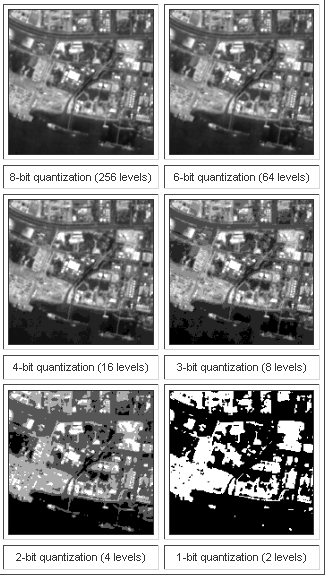

This lab introduces one more type of resolution “Radiometric resolution” which primarily describes the quantization of data levels with respect to their visibility on image. In other words radiometric resolution provides idea about the ‘bit’ level information about the image and how these bits are used to display variations in the image at distinguishable capacity for object identification and information extraction.

Every time an image is acquired on film or by a sensor, its sensitivity to the magnitude of the electromagnetic energy determines the radiometric resolution. The radiometric resolution of an imaging system describes its ability to discriminate very slight differences in energy. The finer the radiometric resolution of a sensor the more sensitive it is to detecting small differences in reflected or emitted energy
|
Imagery data are represented by positive digital numbers which vary from 0 to (one less than) a selected power of 2. This range corresponds to the number of bits used for coding numbers in binary format. Each bit records an exponent of power 2 (e.g. 1 bit=2 1=2). The maximum number of brightness levels available depends on the number of bits used in representing the energy recorded. Thus, if a sensor used 8 bits to record the data, there would be 28=256 digital values available, ranging from 0 to 255. However, if only 4 bits were used, then only 24=16 values ranging from 0 to 15 would be available. Thus, the radiometric resolution would be much less. Image data are generally displayed in a range of grey tones, with black representing a digital number of 0 and white representing the maximum value (for example, 255 in 8-bit data). The intrinsic radiometric resolution of a sensing system depends on the signal to noise ratio of the detector. In a digital image, the radiometric resolution is limited by the number of discrete quantization levels used to digitize the continuous intensity value. The images illustrate the effects of the number of quantization levels on the digital image. The first image is a SPOT panchromatic image quantized at 8 bits (i.e. 256 levels) per pixel. The subsequent images show the effects of degrading the radiometric resolution by using fewer quantization levels. |
 |

- In this experiment you are provided with a wavelength slider according to which you can adjust the wavelength emmited by the spectrometer to the object placed on the table. You are provoded with four such objects.
- Start the experiment by selecting wavelength from slider.Reflected ray will be captured by the lens of the spectrometer and reflectance is calulated.
- Take observations and fill them in the boxes against wavelength and reflectance, provided in the parallel pane, and mark the points.
- Likewise mark atleast 5-6 points and generate graph.
- Now, press Compare button to compare your observed graph with the original graph.


Q1.
If an image has radiometric resolution of 6 bits, what is the max value that could be represented in the image?
a. 128
b. 64
c. 256
d. 1024

Please provide feedback for the experiment.